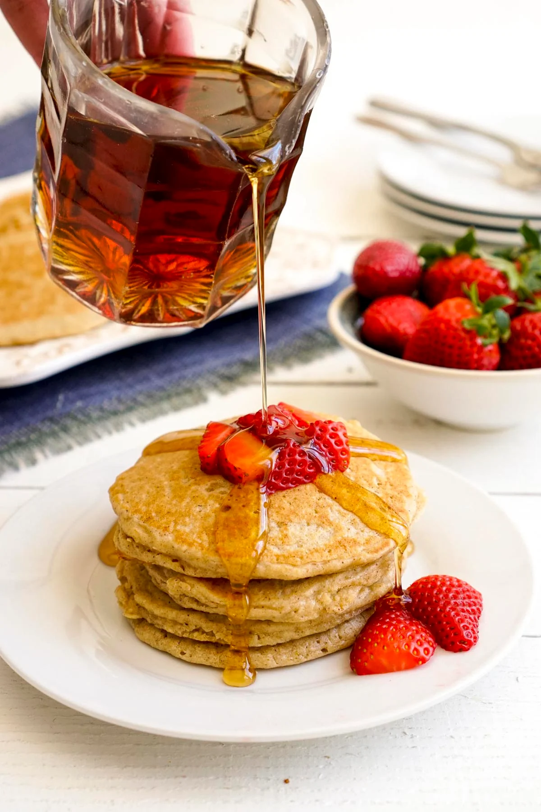

Oat Flour Pancakes

About Oat Flour Pancakes
Pancakes happen just about every weekend in my house. Depending on the mood of the person who’s making them, they take many different forms. We make them with wheat flour, white flour, gluten-free flour, or a combination. These oat flour pancakes are one of my favorite versions. Oats are a nutritious option for breakfast, so it’s natural to enjoy them in pancake form on the weekends. The flavor is delicious, and it’s great to have another way to incorporate oats into my family’s diet.